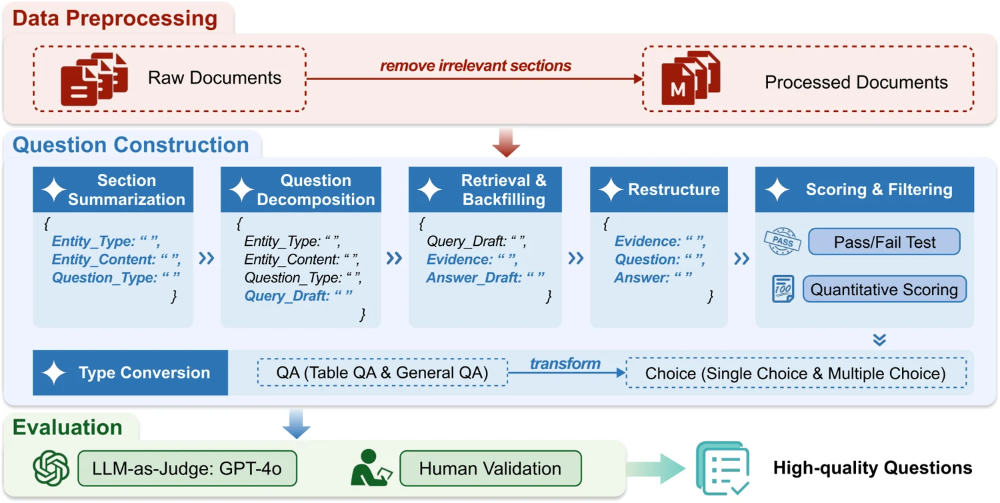

大模型：学习与推理Learning & reasoning
研究训练数据的选择与混合，评估大模型在商业任务中的推理能力，并诊断记忆、推理与指令遵循中的失误。Studying training-data selection and mixing, evaluating business reasoning, and diagnosing failures in memory, reasoning, and instruction following.
了解更多Learn moreHKUST(GZ) · FINANCIAL TECHNOLOGY
探索大模型与智能体，理解经济与金融世界。Exploring language models and agents to understand our economic and financial world.
我们研究金融与经济中的智能方法：从大模型的学习与推理，到智能体的协作与决策，再到金融市场的建模与实证。研究由香港科技大学（广州）金融科技学域张光助理教授带领。We study intelligence in finance and economics—from how language models learn and reason, to how agents collaborate and decide, to modeling financial markets. Led by Guang Zhang at HKUST(GZ).
研究训练数据的选择与混合，评估大模型在商业任务中的推理能力，并诊断记忆、推理与指令遵循中的失误。Studying training-data selection and mixing, evaluating business reasoning, and diagnosing failures in memory, reasoning, and instruction following.
了解更多Learn more探索知识驱动的多智能体研究流程，以及语言模型在多轮交互、社会情境与经济决策中的行为。Exploring knowledge-grounded multi-agent research and language-model behavior in multi-turn interactions, social settings, and economic decisions.
了解更多Learn more结合金融计量、随机过程与机器学习，研究金融时间序列、市场事件的传播及实证金融问题。Combining financial econometrics, stochastic processes, and machine learning to study time series, market-event propagation, and empirical finance.
了解更多Learn more

助理教授 · 金融科技学域Assistant Professor · Financial Technology
张光博士任香港科技大学（广州）社会枢纽金融科技学域助理教授，2021 年 5 月获波士顿大学经济学博士学位。研究兴趣包括金融科技、金融计量经济学、机器学习与实证金融。Guang Zhang is an Assistant Professor in the Financial Technology Thrust, Society Hub, at HKUST(GZ). He received his Ph.D. in Economics from Boston University in May 2021. His research interests include FinTech, financial econometrics, machine learning, and empirical finance.
联系与交流Get in touch